Answering HSC questions on the Cities of Vesuvius
This site does one thing: it shows you the thinking behind a strong HSC answer. Every question below is worked through in four moves — deconstruct the sources, deconstruct the question, write the response, then annotate every sentence to show what work it is doing and why it earns marks.
About the evidence in this site
Every source named here is a real source, with a real citation. Nothing has been invented. Where the exact wording of a translation could not be verified, the text is given as a clearly-labelled summary or standard rendering rather than inside quotation marks — check the precise wording against your own textbook and your study guide before you quote it in an assessment. Where scholars genuinely disagree (the eruption date, the function of the Building of Eumachia, how competitive the elections really were), the disagreement is presented as a disagreement, because recognising contested evidence is itself a top-band skill.
On the exam structure: Section I of the HSC Ancient History paper is the Cities of Vesuvius core and is worth 25 marks, made up of three or four parts, with one part worth 10 to 15 marks. The eight sets below are practice across that whole range of mark values (3 to 12) — they are not one 25-mark paper. Check the current paper and the marking guidelines at NESA before assuming any particular split.
Images: every photograph and painting here is public domain or Creative Commons licensed, credited in its caption and listed in full under Images: licences and credits. A few of them are records rather than remains — a watercolour copy of painted notices, an 1830 engraving, a modern copy of a mosaic — and the captions say so, because knowing the difference between evidence and a record of evidence is itself an examinable skill.
How to use it
- Attempt first, reveal second. Every model answer is hidden behind a Reveal the model answer toggle. Write your own version before you open it — reading a model answer you have not attempted teaches almost nothing.
- Read the margin notes. The orange notes beside each sentence explain what that sentence is doing. That is the actual lesson; the answer itself is just the demonstration. Use the Marker’s notes button in the top bar to hide them and re-read the answer clean.
- Do the Your turn question. Each set ends with a parallel question on the same skill using different evidence, and a self-marking checklist instead of an answer.
- Print the sets you want as handouts. Everything expands automatically when printed and the images convert to greyscale for photocopying.
The four-move method
Every set on this site follows the same four moves. They are in this order for a reason: students lose most of their marks by writing before they have read.
Deconstruct the sources
Work through every source with the same five-part frame, whether it is a letter, an inscription or a photograph of a building:
| Frame | The question you ask |
|---|---|
| Origin | Who made it, where, when? Is it contemporary with what it describes? |
| Nature & purpose | What kind of thing is it, and what was it for? An epitaph advertises; a sewer deposit advertises nothing. |
| Content | What does it actually show or say — stated plainly, before you interpret it? |
| Value | What can a historian learn from it that they could not learn elsewhere? |
| Limitations | What does it leave out, distort, or over-represent? Whose voice is missing? |
Looking at an archaeological image is a skill in itself. Do it in this order: (1) what is the first thing you notice; (2) what is it made of, and how well made is it — cheap or costly, mass-produced or commissioned; (3) what is its archaeological context, that is, where exactly was it found and what was found with it. The third question is the one students skip, and it is usually where the marks are. A lararium fresco in a tavern means something different from the same fresco in a mansion.
Deconstruct the question
Before writing, isolate five things: the directive verb and its NESA meaning; the topic; the city or cities named (answer only those); the source instruction (“using Source A and Source B” is compulsory, not a suggestion); and the mark value, which tells you how long to write.
Translating marks into length
A rough working guide, not a rule: 3–4 marks — two to four sentences, no introduction, no conclusion. 5–8 marks — a tight paragraph or two, opening with a claim, closing with a limitation or judgement. 10–15 marks — a thesis sentence, three or four themed paragraphs, a conclusion. The commonest self-inflicted wound in this topic is writing a 12-mark answer to a 4-mark question and running out of time in Section IV.
Write the response — then read the annotations
The marking unit of this topic is a triple: one named piece of evidence + what it reveals + one limitation or debate. If a sentence contains none of those three, ask what it is for. NESA’s band language runs limited → basic → sound → thorough → comprehensive; the jump from “sound” to “thorough” is almost always the addition of evaluation, not the addition of more content.
Your turn
A parallel question on the same skill with different sources, and a checklist to mark yourself against. No model answer — that is the point.
The geographical setting and natural features of Campania 3 marks
Syllabus: the geographical setting and natural features of Campania (Survey). Skill focus: writing short, and using both sources when there is no room to spare.
Deconstruct the sources
Strabo describes the country around Vesuvius as covered with excellent fields, except at the summit, which is largely flat, unfruitful and ash-coloured, with porous rock that looks as though it has been eaten out by fire. He infers that the mountain was once alight and had craters of fire, which went out when the fuel was exhausted — and he connects this volcanic past to the exceptional fertility of the surrounding plain.
Strabo, Geography Book 5. Written by a Greek geographer working at Rome in the Augustan period, roughly 7 BC–AD 18 — some seventy years before the eruption.
Summary of Strabo’s argument, not a verbatim translation. Check your own edition before quoting.
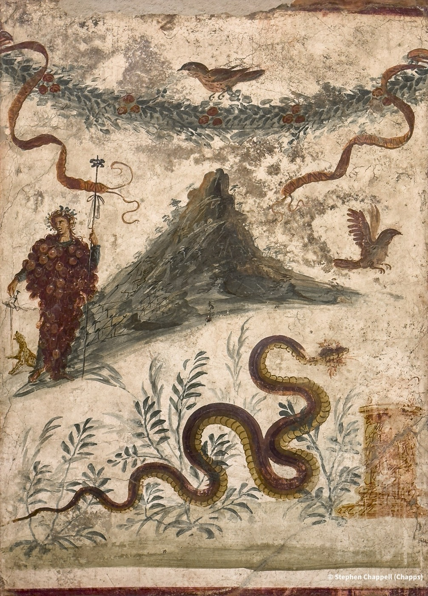
| Frame | Source A — Strabo | Source B — Bacchus fresco |
|---|---|---|
| Origin | Greek geographer at Rome, c. 7 BC–AD 18; not an eyewitness of the eruption. | Painted in a household shrine in a Pompeian house, before AD 79. |
| Nature & purpose | Systematic geographical description for an educated readership. | Religious image for domestic worship — but also a celebration of the local product. |
| Content | Fertile fields; burnt, sterile summit; fire-eaten rock; inference of extinct volcanic activity. | The wine god literally clothed in the region’s crop, beside a vine-covered mountain. |
| Value | Shows that ancient observers linked the volcano to the soil’s richness — the reason people farmed a dangerous plain. | Shows Pompeians themselves associating the mountain with wine and prosperity, in their own homes. |
| Limitations | Written decades earlier and far away; treats Vesuvius as spent, not dormant. Praise-writing about Campania was a literary convention. | The mountain is not labelled — the identification as Vesuvius is a reasonable reading, not a certainty. Religious imagery is idealised. |
Deconstruct the question
Using Source A and Source B, outline TWO natural features of Campania that contributed to the prosperity of Pompeii. 3 marks
| Verb | Outline — sketch in general terms; indicate the main features. You are not being asked to explain at length, evaluate, or judge. |
| Scope | TWO features. Not one, not four. The word “natural” excludes things people built — the forum is not a natural feature. |
| Cities | Pompeii only. Do not spend a sentence on Herculaneum. |
| Sources | Both are compulsory. At 3 marks you cannot afford a sentence that uses neither. |
| Marks → length | Roughly a mark per feature plus a mark for linking them to prosperity through the sources. Two to three sentences. No introduction. |
| What the marker wants | Two clearly named features, each explicitly connected to wealth, with both sources drawn on. |
| How students lose marks | (1) Naming features but never linking them to prosperity — the question’s actual demand. (2) Describing the sources instead of using them (“Source B is a fresco which shows…”). (3) Writing a 200-word answer and losing time they need later. |
The modelled response
Reveal the model answer
Campania’s volcanic soils were the first natural feature underpinning Pompeii’s prosperity. Source A shows that Strabo already connected the burnt, cindery summit of Vesuvius to the excellent fields below, and Source B shows Pompeians celebrating the result inside their own homes: Bacchus, the wine god, clothed entirely in grapes beside a vine-covered mountain.
These soils yielded three or four crops a year, including the vines behind the local Vesuvinum wine.
Second, the Sarno River and the sheltered Bay of Naples gave Pompeii access to both river and sea routes, so the wine, oil and garum produced from these soils and the bay’s rich fisheries could be sold well beyond Campania — the labelled garum jars of Aulus Umbricius Scaurus turn up across the western Mediterranean.
Total: 89 words. That is the right size for 3 marks.
Your turn
Using a source of your choice and your own knowledge, outline TWO ways the land around Vesuvius was used for commercial agriculture. 3 marks
- Have I named exactly two uses, and are both commercial rather than subsistence?
- Have I used the source, rather than describing it?
- Have I added one named example from my own knowledge — Jashemski’s root casts of the vineyard near the amphitheatre, or the wine presses and buried dolia at Villa Regina, Boscoreale?
- Is it under 100 words?
The eruption of AD 79 and its impact 4 marks
Syllabus: the eruption of AD 79 and its impact on Pompeii and Herculaneum (Survey). Skill focus: comparing along an axis rather than writing two separate descriptions.
Deconstruct the sources
Watching from Misenum, about thirty kilometres across the bay, Pliny the Younger describes a cloud rising from the mountain in the shape of an umbrella pine — a tall trunk spreading out into branches at the top. Ash and pumice fell, daylight failed, the ground shook repeatedly and the sea was sucked back from the shore. His uncle, Pliny the Elder, commander of the fleet at Misenum, sailed towards the eruption to observe it and then to rescue those trapped, landed at Stabiae, and died on the beach the following morning.
Pliny the Younger, Letters 6.16 and 6.20, written to the historian Tacitus at Rome around AD 106 — roughly twenty-five years after the eruption. Pliny was seventeen at the time. He never names Pompeii or Herculaneum.
Summary of the two letters, not a verbatim translation. The phrase “umbrella pine” is the standard rendering of his simile.
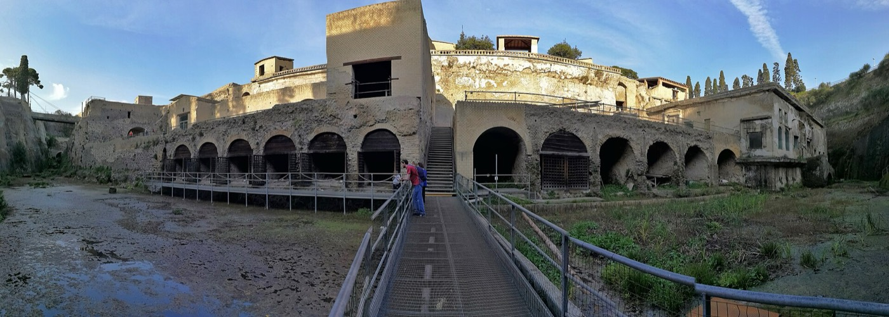
Reading Source B
First thing you notice: the chambers are open to the sea, not part of a house — and the ground in front of them is where the beach used to be. Material and context: these are vaulted stone boat sheds built into the terrace wall; the coastline is now hundreds of metres inland because the eruption pushed it seaward, so the whole town sits below and behind the modern shore. What the context adds that the structure alone cannot: the roughly 300 skeletons excavated inside these chambers prove the direction of flight. Herculaneum’s people did not die at home in their beds — they ran to the sea, and something caught them there. That is why the discovery changed the interpretation of a town that had for two centuries looked almost empty of victims.
Deconstruct the question
Using Source A and Source B and your own knowledge, compare the effects of the eruption of AD 79 on Pompeii and Herculaneum. 4 marks
| Verb | Compare — show how things are similar and/or different. This is a structural instruction: your answer must be organised around points of difference, not around two towns in turn. |
| Scope | “Effects” means both the burial of the cities and the deaths of the people — and, at the top of the range, the different evidence each burial produced. |
| Sources | Both, plus own knowledge. Note that Source A does not distinguish the two towns at all — so own knowledge is doing real work here, not decorating. |
| Marks → length | Around four sentences. Roughly: one on Pompeii’s mechanism, one on Herculaneum’s, one on the human and evidential consequence, one of evaluation. |
| What the marker wants | A clear axis of comparison — fall phase versus surge phase — with correct detail attached to the right town, and both sources genuinely used. |
| How students lose marks | (1) Writing two disconnected descriptions with no comparative words. (2) Swapping the towns’ details — the pumice fell on Pompeii, not Herculaneum. (3) Claiming Pliny watched Pompeii being destroyed; he was thirty kilometres away and never names it. |
The modelled response
Reveal the model answer
Pompeii was buried by the very phase Pliny describes in Source A. The umbrella-pine column drove south-east on the prevailing wind and dropped pumice, or lapilli, on Pompeii at roughly fifteen centimetres an hour to a depth of nearly three metres; roofs collapsed under the accumulating weight, which caused the first deaths, while most residents fled during those twelve to eighteen hours of falling stone.
Herculaneum, upwind to the west, received almost no pumice at all and was instead destroyed in the second, Pelean phase, when the column collapsed: pyroclastic surges one and two struck the town at around 400 to 500 degrees Celsius and buried it under some twenty to twenty-three metres of material that set hard as tuff.
Source B shows what that meant for people: about three hundred skeletons were excavated from these vaulted boat chambers on Herculaneum’s beach, where those who fled seaward died instantly of thermal shock. The contrast in the surviving evidence follows directly from the contrast in burial — Herculaneum’s airless, damp deposit carbonised organic material and preserved skeletons, while at Pompeii bodies decayed inside the loose ash and left cavities, which Fiorelli began filling with plaster in 1863.
Pliny is invaluable but limited here: writing roughly twenty-five years later from thirty kilometres away, he never names either town, so the differing fate of the two is reconstructed from stratigraphy — Sigurdsson and Carey’s work from 1982 — and from the skeletal evidence, rather than from any eyewitness.
Your turn — representations
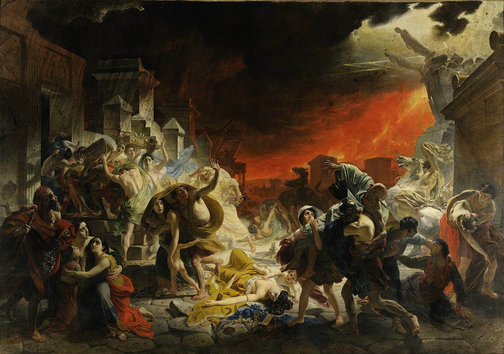
Using the source above and your own knowledge, identify ONE nineteenth-century and ONE twenty-first-century representation of the eruption, and outline one difference in how each presents it. 4 marks
- Have I named specific works? Karl Briullov’s The Last Day of Pompeii (1830–33) or Bulwer-Lytton’s novel (1834); the film Pompeii (2014) or a virtual-reality tour.
- Have I identified each one’s purpose and audience, not just its content?
- Have I named a concrete difference — divine punishment of a decadent city versus digitally modelled volcanology with an invented harbour tsunami?
- Have I treated representations as evidence about their own era, which is what this dot point is actually testing?
The economy: industries, trade and occupations 5 marks
Syllabus: the economy: role of the forum, trade, commerce, industries, occupations (Focus of study). Skill focus: getting several distinct revelations out of one short source.
Deconstruct the sources
A round carbonised loaf of bread from Herculaneum, stamped before baking: “made by Celer, slave of Quintus Granius Verus”.
Carbonised stamped loaf, from the house of Quintus Granius Verus, Herculaneum. Preserved by carbonisation in the AD 79 deposit.
Standard rendering of the stamp. The object is simultaneously a written source and an archaeological one — worth saying so in an answer.
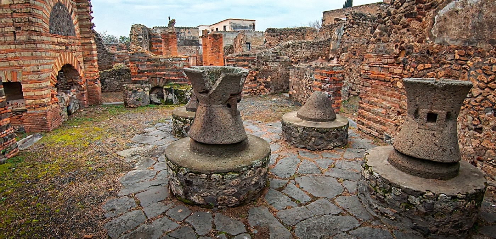
| Frame | Source A — the loaf of Celer | Source B — the bakery |
|---|---|---|
| Origin | Made in Herculaneum on the day of the eruption; stamped by or for the household of Q. Granius Verus. | Pompeii, in use in AD 79, excavated as standing remains. The building has been consolidated by modern restorers. |
| Nature & purpose | A commercial product, marked for identification — a maker’s stamp or quality mark, not a document about society. | Industrial plant: the fixed capital of a business. |
| Content | A worker’s name, his legal status as a slave, and his owner’s name. | Grain mills of imported lava stone and a large wood-fired oven, integrated on one site. |
| Value | Documents branding, production for sale beyond the household, and the enslaved workforce — all in one object, incidentally rather than for display. | Shows the scale and technology of the trade: milling and baking were done under one roof. |
| Limitations | A single object. Tells us nothing about output, price or Celer’s conditions. | Capacity is visible; turnover, profit and wages are not. The building has been consolidated by modern restorers. |
Deconstruct the question
Using Source A and Source B and your own knowledge, explain what the evidence reveals about the organisation of the baking industry in Pompeii and Herculaneum. 5 marks
| Verb | Explain — make relationships evident; provide why and how. An explain answer that contains no because, so or which meant is usually a describe answer in disguise. |
| Scope | “Organisation” is the key word — how the industry was structured: its plant, its scale, its labour, its market. Not a description of what bread was like. |
| Cities | Both. The two sources conveniently give you one each. |
| Marks → length | A tight paragraph, four or five sentences. Open with a claim, close with a limitation. |
| What the marker wants | Each source used for something the other cannot supply, own knowledge providing scale, and one evaluative sentence. |
| How students lose marks | (1) Opening with “Source B is a photograph of a bakery” — a wasted sentence at 5 marks. (2) Retelling how Roman bread was made instead of answering about organisation. (3) Getting all the way through without one limitation. |
The modelled response
Reveal the model answer
Baking in both towns was organised as a specialised, capitalised trade rather than a domestic chore. Source B shows the plant that required: four hourglass mills of imported lava stone, turned by donkeys or by slaves, standing beside a large wood-fired oven — grain-milling and baking integrated on a single commercial site.
Its scale is measurable from own knowledge: more than thirty pistrina have been identified at Pompeii, and eighty-one carbonised loaves were still inside the oven of the Bakery of Modestus at the moment of the eruption.
Source A adds the labour and the commerce. Because the loaf is stamped “made by Celer, slave of Quintus Granius Verus”, a single object documents three things at once: bread was marked for identification or quality, which implies it left the household and entered a market; production was organised under a named owner; and the person who actually did the work was enslaved.
The organisation of labour was therefore mixed: free proprietors owning the fixed capital, enslaved workers like Celer doing the milling and baking, and the finished product sold on into a town where many houses had no kitchen.
Neither source records output, prices or wages, however: the mills reveal capacity rather than turnover and Celer’s working conditions are unknowable, which is why the wider question of whether Pompeii’s workshops served a local market or a regional export trade remains contested between Moeller, who argued for substantial industry, and Jongman, who saw a consumer town living off its hinterland.
Your turn
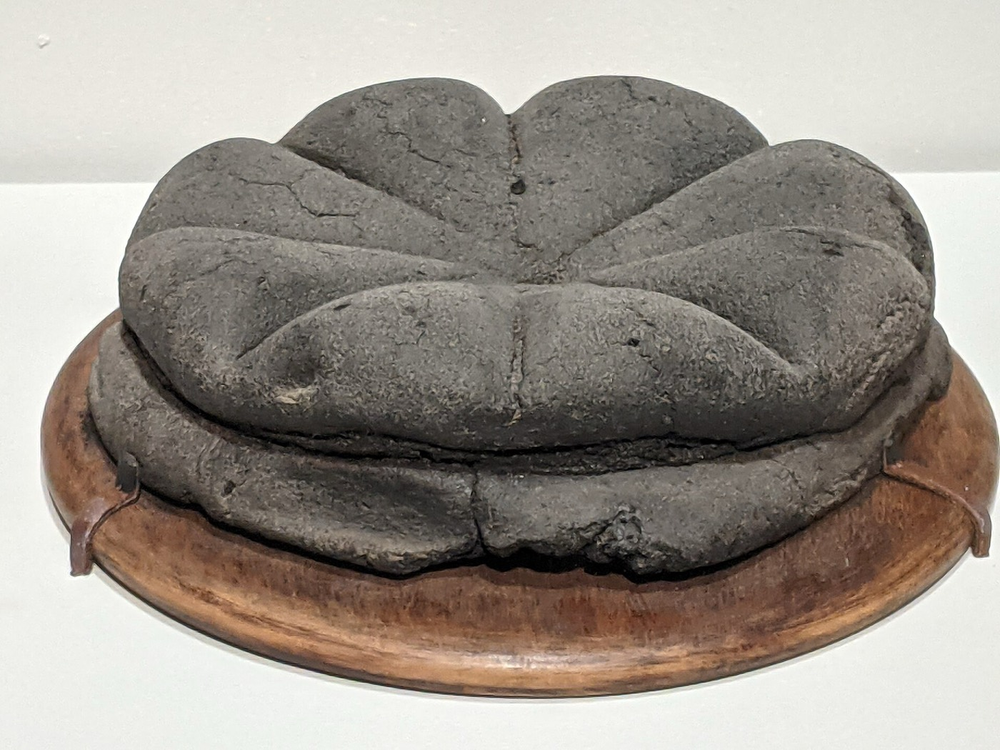
Using the source above and your own knowledge, explain what carbonised food remains reveal about the food trades of Pompeii and Herculaneum. 5 marks
- Have I opened with a claim rather than a description of the photograph?
- Have I explained why this evidence survives — carbonisation in the airless, damp Herculaneum deposit, and charring inside sealed Pompeian ovens?
- Have I used the scoring into portions as evidence of production for sale rather than for one household?
- Have I supplied scale from own knowledge — over thirty pistrina at Pompeii, and eighty-one loaves left in the oven of the Bakery of Modestus?
- Have I noted the limitation that carbonisation favours dry, bakeable foods, so meat and greens are under-represented in what survives?
Everyday life: food and dining 6 marks
Syllabus: everyday life: housing, leisure activities, food and dining, clothing, health, baths, water supply, sanitation (Focus of study). Skill focus: arguing that one type of evidence is stronger than another, and saying why.
Deconstruct the sources
A painted sign from a drinking establishment at Herculaneum, known as the Ad Cucumas sign, shows four wine jugs (cucumae) of graded size with a price marked beside each — advertising four grades of wine at four different prices.
Painted shop sign, Herculaneum, in use in AD 79. One of very few surviving Roman priced drink lists.
Described from its content rather than transcribed, because the numerals and their exact reading are best checked in your own textbook.
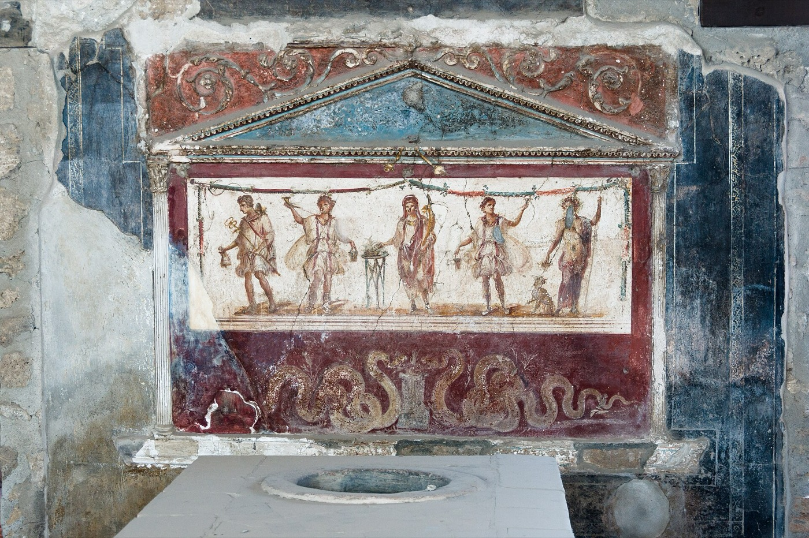
Reading Source B
First thing you notice: the counter faces the street, and the jar is sunk into it — this is a serving hatch for passers-by, not a kitchen for a family. Material and workmanship: the masonry is plain and functional, but the shrine behind it is expensively painted, which tells you the proprietor had money and wanted it seen. Context: the bar stands on the Via dell’Abbondanza, one of Pompeii’s busiest commercial streets; a coin hoard was found in one of its dolia. What the context adds: two arguments the objects alone cannot give you. First, food retail was a street-front business dependent on passing trade. Second, this single image is also evidence for religion in the workplace — the same genius, Lares and serpent that appear in domestic shrines are here in a shop, which is worth remembering for question set 7.
Deconstruct the question
Using Source A and Source B and your own knowledge, explain what the evidence reveals about food and drink in Pompeii and Herculaneum. 6 marks
| Verb | Explain — again, causes and relationships. Here the best explanation is about why the evidence is shaped the way it is as well as what it says. |
| Scope | Both food and drink. Both cities. Aim across the social range — the 6-mark value buys you the elite as well as the ordinary. |
| Marks → length | Five or six sentences, or two short paragraphs. |
| What the marker wants | Specific named evidence, an awareness that different evidence types have different reliability, and at least one limitation. |
| How students lose marks | (1) Listing foods with no source attached. (2) Relying on Petronius’ feast of Trimalchio as though satire were documentation. (3) Ignoring drink entirely when Source A is about drink. (4) Repeating the old claim that Romans were malnourished, which the evidence contradicts. |
The modelled response
Reveal the model answer
Food and drink in both towns were substantially bought rather than cooked at home, and the diet they supported was more varied and considerably better than older assumptions about the Roman poor allowed. Sources A and B are both evidence of the same commercial system: Source A prices four grades of wine, and Source B is the counter it would have been sold across.
What people actually ate is known most directly from waste rather than from writing. The Cardo V sewer beneath Insula Orientalis II at Herculaneum, excavated by the Herculaneum Conservation Project, preserved the refuse of the ordinary tenants in the flats above: fish, sea urchin, figs, olives and grapes — and black peppercorns, an imported luxury reaching non-elite tables.
The retail side is documented by both sources together. The Ad Cucumas sign in Source A advertises four grades of wine at four prices, which implies a graded and competitive market for drink; Source B supplies the premises, with its dolia sunk into a counter opening straight onto the Via dell’Abbondanza. This existed on a large scale — roughly 150 to 160 thermopolia at Pompeii — because a great many homes in both towns had no kitchen at all.
At the top of the social scale the pattern inverts: wealthy households dined at home in the triclinium, reclining nine to three couches, served with vessels like the 118-piece silver service found in the House of the Menander.
Each source nonetheless samples narrowly. The sewer deposit represents a single insula over perhaps twenty years; carbonisation preserves dry bakeable foods far better than meat or greens, skewing what survives; and the once-standard claim that counter dolia like the one in Source B held hot stew is now doubted, since porous unglazed jars suited dry goods better than liquids.
Your turn — water supply and sanitation
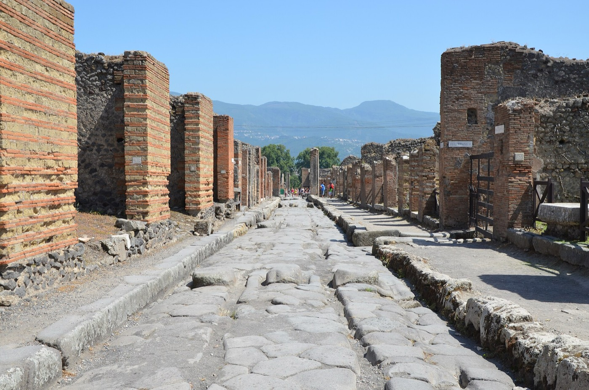
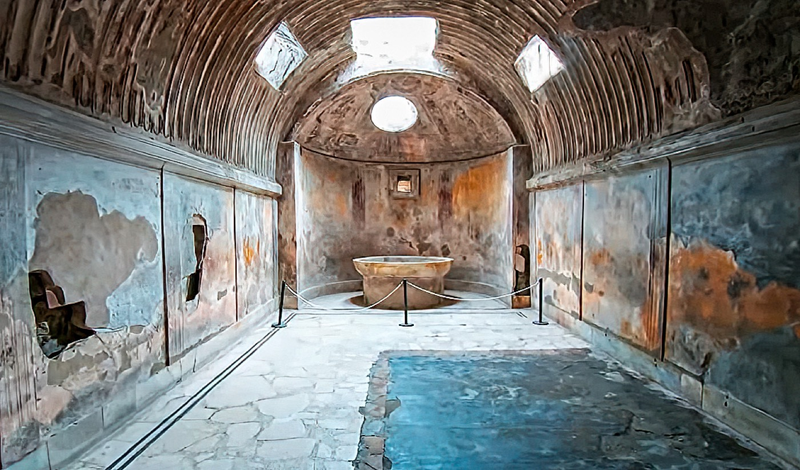
Using the sources above and your own knowledge, explain what the evidence reveals about water supply and sanitation in Pompeii and Herculaneum. 6 marks
- Have I traced the system: the Augustan Aqua Augusta branch, the castellum aquae at the Porta Vesuvio, fourteen water towers, roughly forty public fountains, lead fistulae to subscribing houses?
- Have I used the sharpest contrast between the towns — Pompeii’s streets doubling as storm drains, hence stepping stones, against Herculaneum’s proper underground Cardo V sewer, which meant it needed none?
- Have I explained the consequence for daily life rather than just describing pipes?
- Have I noted that both towns were mid-repair in AD 79 after the earthquake, so this is a snapshot of disruption rather than normality?
- Have I flagged that the health effects of lead pipes are contested rather than asserting lead poisoning?
Local political life 7 marks
Syllabus: local political life: decuriones, magistrates, comitium (Focus of study). Skill focus: an assess question — leading with a judgement and proving it.
Deconstruct the sources
“The fruit-sellers together with Helvius Vestalis urge you to elect Marcus Holconius Priscus duumvir with judicial power.”
A painted electoral notice (programma) on a street facade at Pompeii. About 2,800 such notices survive, most relating to the elections of AD 79.
Standard rendering of a typical programma. The formula — supporters, candidate, office — is fixed; the supporters vary.
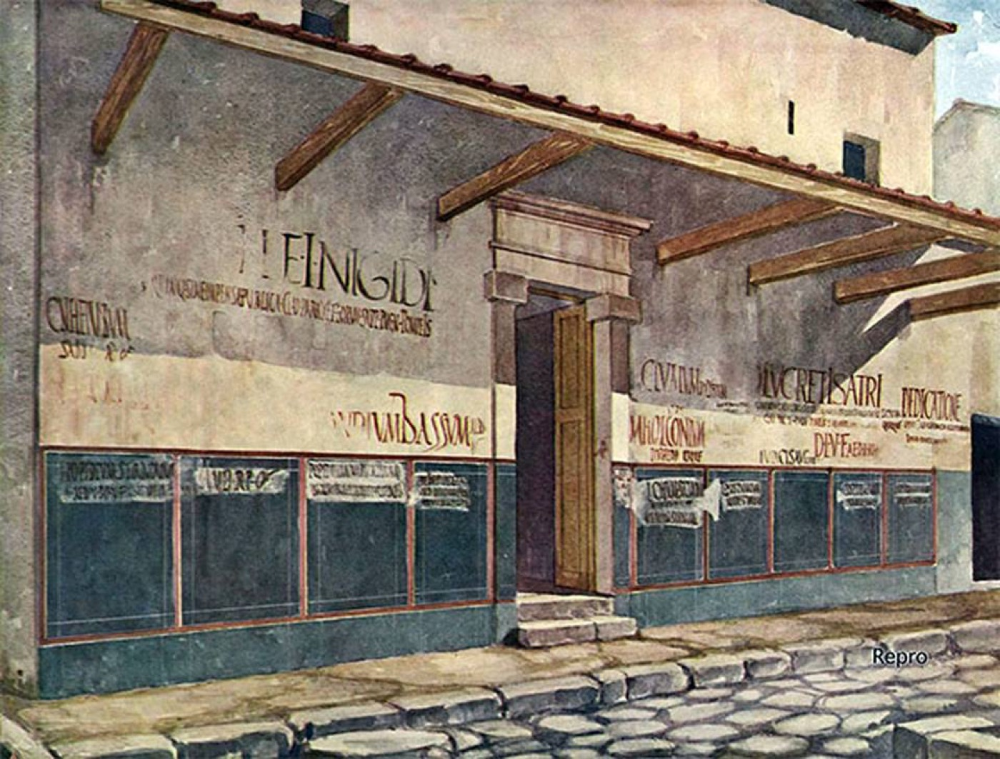
Reading Source B
First thing you notice: the size and quality of the lettering — this is professional signwriting, not scratched graffiti. That matters, because programmata were commissioned and paid for, so they measure organised support rather than spontaneous popularity. Context: the wall is a shopfront on the Via dell’Abbondanza, one of the busiest commercial streets in the town. What the context adds: election campaigning happened on trading premises along the main thoroughfares, borrowing other people’s walls — including, elsewhere on the same street, the frontage of the bar run by the innkeeper Asellina, a woman who could not vote but publicly backed candidates.
One further point, and a genuinely examinable one: this image is a nineteenth-century watercolour record of the notices, not a photograph of the wall as it survives now. It is therefore evidence about the evidence — invaluable, because the paint has faded badly since, but one further step removed from AD 79. Recognising the difference between evidence and a record of evidence is exactly the kind of source criticism that earns marks.
Deconstruct the question
Using Source A and Source B and your own knowledge, assess the usefulness of painted electoral notices as evidence for local political life in Pompeii. 7 marks
| Verb | Assess — make a judgement of value or quality. An assess answer with no judgement sentence cannot reach the top bands, however much content it contains. |
| Scope | “Usefulness” means useful for what. Be specific: highly useful for the mechanics of campaigning, useless for voting outcomes. |
| Cities | Pompeii — but the comparison with Herculaneum, which has almost no programmata, is a legitimate and powerful limitation. |
| Marks → length | Two solid paragraphs, or five to six developed sentences. Judgement first, judgement again at the end in different words. |
| What the marker wants | Quantity of the evidence, a specimen quoted briefly, the supporter networks, the formulaic limitation, at least one named historian, and a verdict. |
| How students lose marks | (1) Describing what programmata say without ever judging their usefulness. (2) Transcribing whole notices to fill space. (3) Treating painted enthusiasm as evidence of votes won. (4) Naming no scholars, when this dot point has a genuine and well-known debate. (5) Forgetting that much of what we can read was recorded by nineteenth-century copyists before the paint faded. |
The modelled response
Reveal the model answer
Painted electoral notices are the richest surviving evidence for electoral culture anywhere in the Roman world, and they are outstandingly useful for the mechanics and the social reach of campaigning — but they measure visibility rather than votes, and they survive in usable quantity at Pompeii alone.
Their first value is sheer quantity: roughly 2,800 programmata survive on Pompeian facades, professionally painted by named scriptores and mostly relating to the elections of AD 79 — a density of political documentation no other Roman town can match. Source A shows the standard formula of supporters, candidate and office: the fruit-sellers, together with Helvius Vestalis, urging the election of Marcus Holconius Priscus as duumvir with judicial power.
Their real analytical value lies in those supporter lists, because they reveal a politics reaching far beyond the male electorate. Trade groups campaign as blocs — fruit-sellers, muleteers, goldsmiths, fishermen; the millers and “all the worshippers of Isis” back Gnaeus Helvius Sabinus; and women who could not vote endorse candidates publicly, like the innkeeper Asellina and her staff. Source B shows how physically dominant this was: an entire shopfront on the Via dell’Abbondanza given over to notices, so that campaigning was inseparable from the commercial streetscape.
Their limitations are equally clear. The formulae are almost empty of policy, the praise of Gaius Julius Polybius because “he brings good bread” being a rare exception; and because the notices were commissioned display, painted for patrons by professionals, enthusiasm on a wall cannot be converted into votes at the comitium.
This is why the notices support opposed readings. Mouritsen, and earlier Castrén, argued that the candidate pool was small and controlled by a narrow propertied class, with some offices possibly uncontested and the notices functioning as displays of patronage loyalty; Franklin, by contrast, reconstructed genuine multi-candidate contests for the aedileship in the seventies. That the corpus also contains jokes and sabotage — Marcus Cerrinius Vatia “endorsed” by the late-night drinkers, the sneak-thieves and the whole company of sleepers — shows how carefully each notice must be read before it is counted as support.
The decisive limitation, though, is comparative: Herculaneum has produced essentially no programmata, so an entire town’s electoral life is effectively unknowable. The notices are therefore indispensable evidence for how Pompeians campaigned, unreliable evidence for how they voted, and silent about political life anywhere else.
Your turn — using a written and an archaeological source together
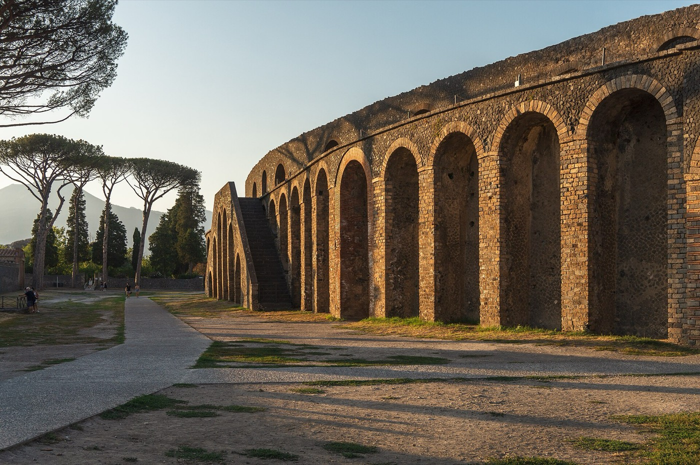
Explain how Tacitus, Annals 14.17 and the archaeological evidence can be used together to reconstruct the amphitheatre riot of AD 59, and identify one limitation of each. 7 marks
- Have I stated what each source contributes that the other cannot — Tacitus supplies the outcome, that Nero and the Senate banned Pompeii’s games for ten years and exiled the sponsor Livineius Regulus; the fresco from the House of Actius Anicetus supplies the local perspective on the brawl itself?
- Have I explained why this event matters — it is one of very few episodes attested in both a text and an image, and it shows Rome’s ultimate authority over local life?
- Have I given a limitation of each: Tacitus is brief, written around AD 116 and Rome-focused; the fresco is naive in style and its purpose is debated?
- Have I resisted turning this into a general description of gladiatorial games?
Social structure: the status and roles of women 8 marks
Syllabus: the social structure: men, women, freedmen, slaves (Focus of study). Skill focus: resolving an apparent contradiction in the evidence, and noticing small textual details.
Deconstruct the sources
A painted notice on the outside wall of a large Pompeian property announces that, on the estate of Julia Felix, daughter of Spurius, there are available to let: an elegant bath suite, shops with upper rooms, and apartments — on a five-year lease.
Rental notice of Julia Felix, CIL IV 1136, painted on the Praedia of Julia Felix, Pompeii (II.4). Datable only to somewhere between the earthquake of AD 62/63 and the eruption.
Summary of the notice’s content in the wording used in your study guide, not a verbatim translation.
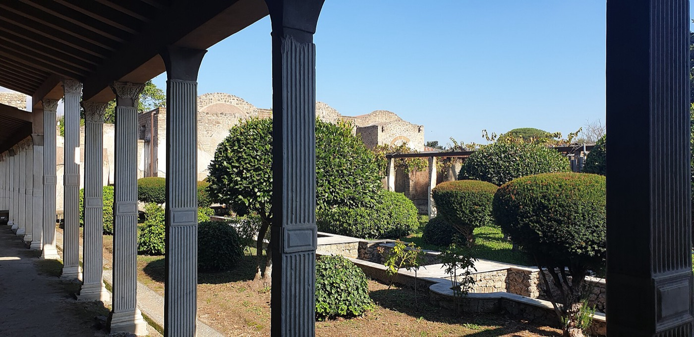
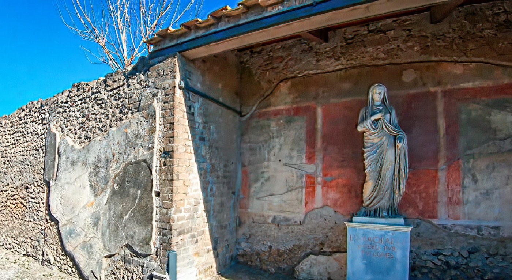
Reading the images
With the Praedia, the thing to notice is scale. Source A is a short advertisement; this is what it was advertising — a property so large that its baths, shops and apartments could be let separately, occupying most of a city block. The notice tells you a woman was in business; the ruins tell you how much business.
With the Eumachia statue, the question to ask is never “what does she look like?” but who paid for it. A trade association — the fullers — commissioned a portrait of a female patron and set it up inside the building she had funded, and said so on the base. The dedicator tells you about power; the drapery does not.
Deconstruct the question
Using Sources A and B and your own knowledge, explain what the evidence reveals about the status and roles of women in Pompeii. 8 marks
| Verb | Explain — and the thing needing explanation is a contradiction: women were legally powerless yet publicly prominent. A good answer names that tension and resolves it. |
| Scope | “Status and roles” — two things. Status is legal and social standing; roles are what women actually did. |
| Marks → length | Two developed paragraphs, five or six substantial sentences. Enough room for four named women. |
| What the marker wants | Named individuals across free, freed and enslaved women; the legal ceiling stated plainly; and a limitation about whose evidence survives. |
| How students lose marks | (1) Writing only about Eumachia, so the answer becomes a biography. (2) Claiming women had no public role, which the evidence contradicts. (3) Ignoring enslaved women completely — the largest group and the least documented. (4) Never mentioning that these wealthy women are exceptions. |
The modelled response
Reveal the model answer
Women in Pompeii were excluded from the vote and from every magistracy, yet the evidence shows citizen women owning property, running businesses, holding religious office and funding public buildings. Status therefore has to be read on two separate axes — legal, where women were powerless, and economic and religious, where some were formidable.
Source A is a woman transacting business in public and in her own name. The notice, CIL IV 1136, offers the elegant baths, the shops with upper rooms and the apartments of the Praedia of Julia Felix on a five-year lease — a very large estate converted into rental premises, most plausibly in the years after the earthquake of AD 62/63, when demand for housing and bathing would have been high.
Source B shows the second axis. Eumachia, sacerdos publica, funded the largest building on the forum’s east side in her own name and her son’s, dedicating it to Concordia Augusta and Pietas — and the fullers erected this statue to her inside it. A trade association publicly honouring a female patron is evidence not of decorative respectability but of real patronage power.
Other named women fill out the pattern across the social range: Mamia built a temple to the Genius of Augustus on her own land at her own expense and was granted a schola bench-tomb by the council; the freedwoman Naevoleia Tyche built her family’s tomb at the Herculaneum Gate, complete with ship relief; Asellina ran a bar and lent her frontage to candidates; and the freedwoman Poppaea Note appears in wax-tablet slave-sale documents.
The ceiling was nonetheless absolute, and the sources show it. None of these women voted or held office; Eumachia’s benefaction advanced her son’s career as much as her own standing; and the notice in Source A identifies Julia Felix as the daughter of Spurius. Female public presence operated through property, priesthood and family — never through the cursus honorum.
The evidence is also badly skewed towards the visible. Eumachia, Mamia and Julia Felix were wealthy enough to buy stone and paint; enslaved women appear mainly through other people’s words — the roughly 130 graffiti of the lupanar, written overwhelmingly by clients and using what may be trade-names rather than real ones, and a gold bracelet from Moregine inscribed dominus ancillae suae, “from the master to his slave-girl”.
Your turn — freedmen
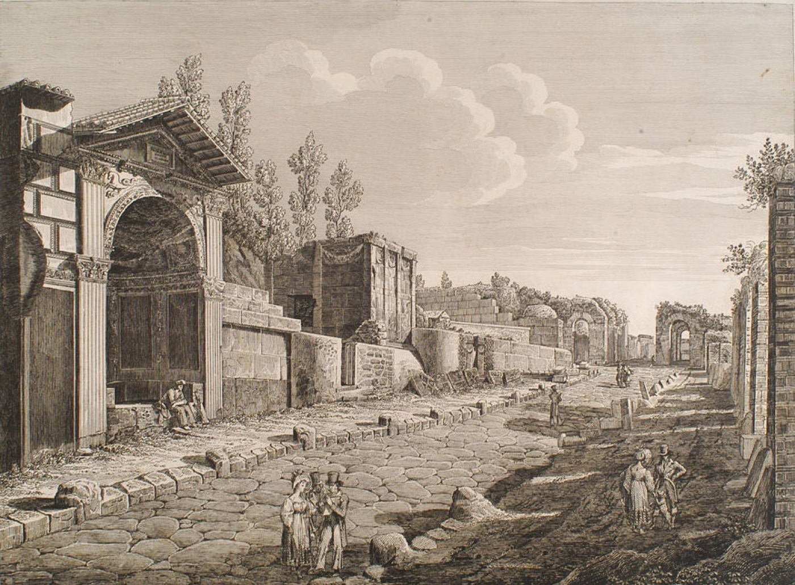
Using the source above and your own knowledge, assess the value and limitations of funerary monuments as evidence for the position of freedmen in Pompeii. 8 marks
- Have I opened with a judgement containing a “but”?
- Have I used named monuments — the altar tomb of Naevoleia Tyche and Gaius Munatius Faustus, with its ship relief and bisellium relief marking him as an Augustalis?
- Have I explained the freedman strategy: barred from magistracies themselves, they advanced their freeborn sons, as when the six-year-old Numerius Popidius Celsinus was enrolled in the ordo after his father paid to rebuild the Temple of Isis?
- Have I included Mouritsen’s caution — freedmen are over-represented in epitaphs, so frequency on tombstones is not population share?
- Have I noted the survivorship problem: monumental tombs belong to the successful, and the poor are nearly invisible?
Religion and the influence of Egyptian culture 10 marks
Syllabus: religion: household gods, temples, foreign cults and religions, tombs and the influence of Greek and Egyptian cultures: art and architecture. Skill focus: a thesis that names its own structure, and refusing a false binary.
Deconstruct the sources
The dedicatory inscription from the Temple of Isis at Pompeii records that Numerius Popidius Celsinus, son of Numerius, rebuilt the Temple of Isis from its foundations at his own expense after it had collapsed in the earthquake, and that the decurions, on account of his generosity, enrolled him in their number without fee — although he was six years old.
Dedication of N. Popidius Celsinus, Temple of Isis, Pompeii (VIII.7.28). The temple was rebuilt after the earthquake of AD 62/63 and excavated in 1764.
Summary of the inscription’s content, not a verbatim translation. The boy’s age is the detail everything else hangs on.
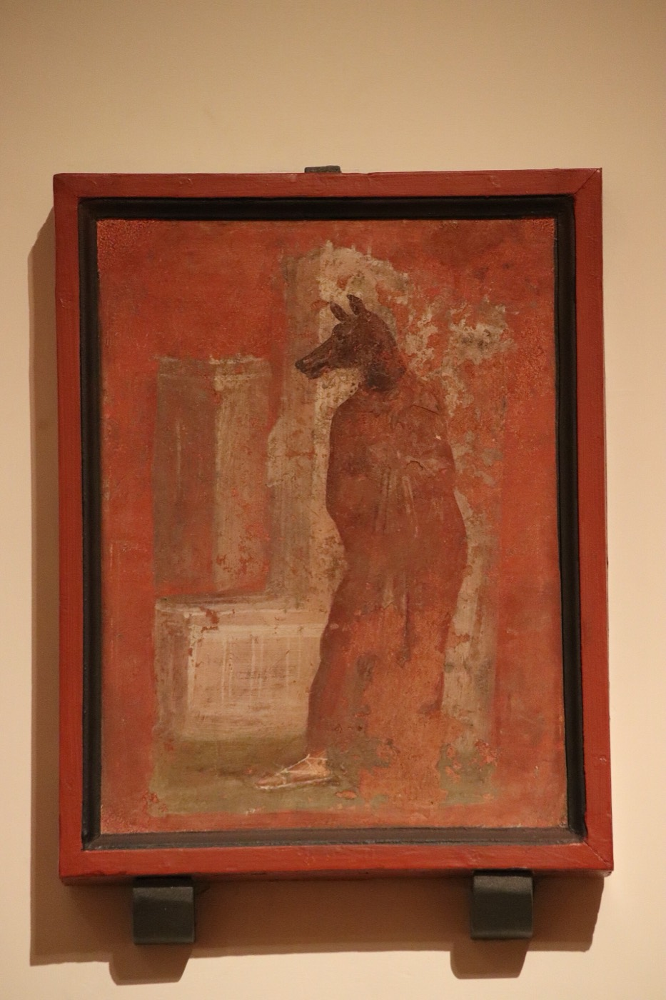
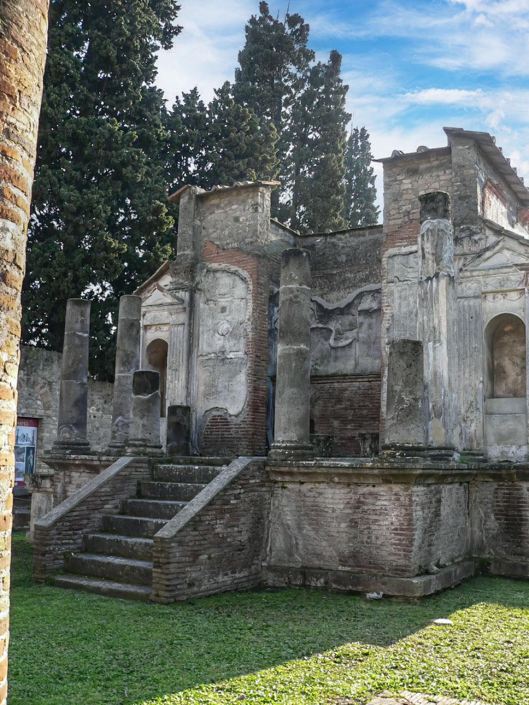
| Frame | Source A — the Celsinus dedication | Source B — the Anubis fresco and the temple |
|---|---|---|
| Origin | Carved for public display at Pompeii after AD 62/63, in the name of a six-year-old boy. | Painted on the walls of the Temple of Isis before AD 79; removed to Naples by early excavators. The temple was excavated in 1764. |
| Nature & purpose | An honorific dedication — a public claim about a family, in the fixed formulaic language of civic benefaction. | Cult decoration inside a working sanctuary: images of the rites for the eyes of worshippers, not a record made for historians. |
| Content | Temple rebuilt from the foundations at private expense; council membership granted without fee; the dedicant is six. | A priest wearing the jackal mask of Anubis beside an altar; and a complete temple with podium, steps and the purgatorium for Nile water. |
| Value | Documents both the priority given to the Isis cult and the exact mechanism by which freedman money bought a son’s rank. | Shows the cult actually being performed — costumed personnel, altars, sacred water — rather than merely commemorated. Egyptian religion was practised, not just referenced. |
| Limitations | The formula conceals the real actor — the father, Ampliatus, whose freedman status barred him from office. One famous case, not a pattern. | Cult imagery is idealised and may show ideal rather than routine practice. Removal to Naples in the 1760s stripped the paintings of their exact position in the building. |
Deconstruct the question
Using Sources A and B and your own knowledge, explain what the evidence reveals about the place of Egyptian religion in Pompeii. 10 marks
| Verb | Explain at 10 marks. This is extended-response territory: you need a thesis, structured body paragraphs, and a concluding judgement, even though the verb is not “assess”. |
| Scope | “Place” is broad and generous — it invites public cult, private devotion, social function and fashion. Use all of it. |
| Marks → length | A thesis sentence plus three or four themed paragraphs plus a judgement. Organise by theme, never source by source. |
| What the marker wants | A clear structure signalled in advance; the Isis temple’s rebuilding priority; the freedman social ladder; the cult-versus-decoration question handled with nuance rather than a yes or no. |
| How students lose marks | (1) Working through Source A, then Source B, then own knowledge — the single commonest structural error in this topic. (2) Reducing the answer to “Egyptian influence was just fashion”. (3) Forgetting that the dedication is about social mobility as much as religion. (4) Describing the temple’s architecture at length without saying what it reveals. |
The modelled response
Reveal the model answer
Egyptian religion at Pompeii was neither a marginal foreign import nor merely decorative fashion. The evidence reveals three overlapping registers — a fully public civic cult, a private devotional practice inside ordinary homes, and a broader decorative Aegyptomania — and the interpretive task is to distinguish worship from décor without pretending the categories were ever sealed off from one another.
Source A places the cult at the centre of civic life. The dedication records that Numerius Popidius Celsinus rebuilt the Temple of Isis from its foundations at his own expense after the earthquake, and that the decurions enrolled him in the council without fee — although he was six years old.
Two things follow from that. First, priority: the Temple of Isis was the first public building in Pompeii to be fully rebuilt after the earthquake of AD 62/63, while the Capitolium at the head of the forum still stood damaged in AD 79 — a striking measure of the cult’s standing in the town’s order of repair. Second, mobility: the real payer was the boy’s father, the freedman Ampliatus, who was barred from holding office himself and therefore bought his freeborn son’s entry into the ordo. Egyptian religion functioned as a social ladder as well as a faith.
The temple itself confirms a genuinely functioning sanctuary rather than a status trophy. Excavated in 1764 with its apparatus still in place, it retained a purgatorium basin for sacred Nile water, frescoes of Egyptian rites and landscapes, sistra, and the remains of offerings on its altars. The cult was notably popular with women, freedmen and slaves, and it operated openly beside the civic gods — a personal, salvation-promising religion tolerated within, not against, the town’s public cults.
Worship also moved indoors, into houses and even shops, which is where the cult stops being civic display and becomes personal religion. Isis-Fortuna bronzes and Anubis figures appear among the household gods in lararia such as that of the House of the Golden Cupids, standing alongside the dancing Lares, the genius and the protective serpent that every Pompeian shrine carried. Egyptian deities were therefore naturalised into the daily offerings led by the paterfamilias.
The third register is fashion rather than faith. After Rome annexed Egypt in 30 BC, Nilotic imagery became chic: the mosaic border in the House of the Faun with its hippopotamus, crocodile and ibis; pygmy burlesques in dining rooms; sphinxes and lotus motifs in Third-Style wall painting; and the long ornamental euripus canal of the Praedia of Julia Felix, evoking the waterways of the Nile delta.
These registers cannot be cleanly separated, and the strongest reading of the evidence accepts that. A sistrum in the Temple of Isis is unambiguously worship; a pygmy fresco in a triclinium is unambiguously entertainment; an Isis-Fortuna statuette in a household shrine sits between the two. A Pompeian who commissioned a Nilotic floor and also made offerings to Anubis would have seen no contradiction, because Roman religion accommodated exactly that overlap. Egyptian religion was thus genuinely believed, socially useful and fashionable at the same time.
Two limitations bind the whole picture. The Bourbon excavators stripped the Temple of Isis of its frescoes to the royal collection at Naples, so its decorative and ritual programme is partly reconstructed from records rather than read in place; and because the cult’s apparent popularity is measured largely from one exceptionally well-preserved temple, its true scale relative to the civic gods cannot be quantified. Small figurines are also portable, so their find-spots do not always prove where they were venerated.
Your turn — Greek influence
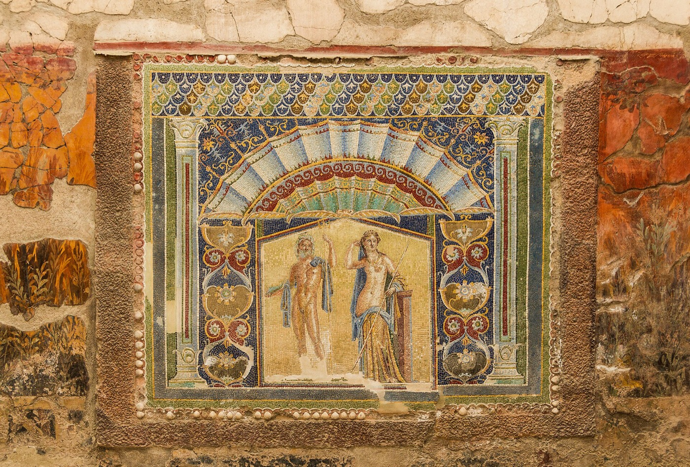
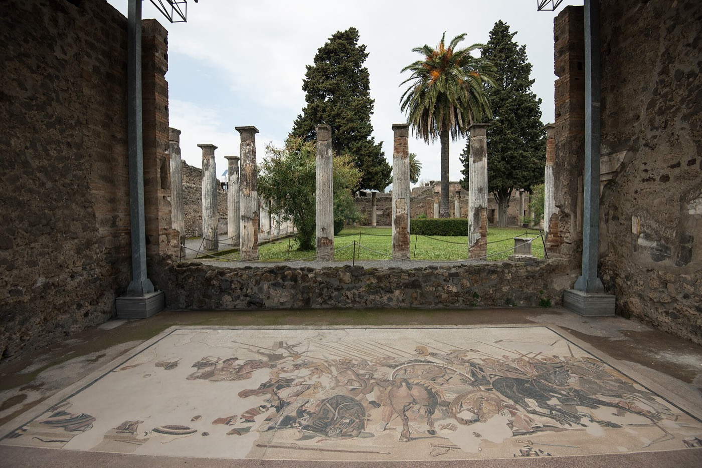
Using the source above and your own knowledge, assess the extent of Greek influence on the art and architecture of Pompeii and Herculaneum. 10 marks
- Does my thesis take a position on extent — pervasive and structural, or superficial and imitative?
- Have I organised by theme (architecture, art, ideas) rather than by source?
- Have I covered the deep roots: the sixth-century BC Doric temple in the Triangular Forum, the Greek-influenced street grid, and Campania’s position beside Magna Graecia?
- Have I used named artworks: the Alexander Mosaic in the House of the Faun with its roughly 1.5 million tesserae; the Doryphoros herm from the Samnite Palaestra; the Greek Epicurean library of Philodemus at the Villa of the Papyri?
- Have I evaluated: these are Roman-era copies, so they evidence the reception of Greek art rather than Greek art itself, and the Alexander Mosaic was lifted from its context in 1843?
- Have I reached a judgement, not just a catalogue?
Conservation, ethics and tourism 12 marks
Syllabus: changing interpretations, issues of conservation and reconstruction, ethical issues and the value and impact of tourism (Reconstructing and conserving the past). Skill focus: a full extended response with a two-part judgement.
Deconstruct the sources
Position 1. Robert Fowler has argued that renewed excavation of the Villa of the Papyri at Herculaneum is justified, because hundreds of lost works of Greek and Latin literature may lie in its still-unexcavated rooms — arguably the greatest recoverable prize in classical scholarship.
Position 2. Andrew Wallace-Hadrill has argued against it: exposing the villa would endanger it and divert scarce funds from keeping the already-excavated sites alive. On this view the best conservation is often not to excavate at all.
Summary of two publicly argued scholarly positions in the debate over the Villa of the Papyri.
These are summaries of published arguments, not direct quotations. Attribute the positions, not the wording.
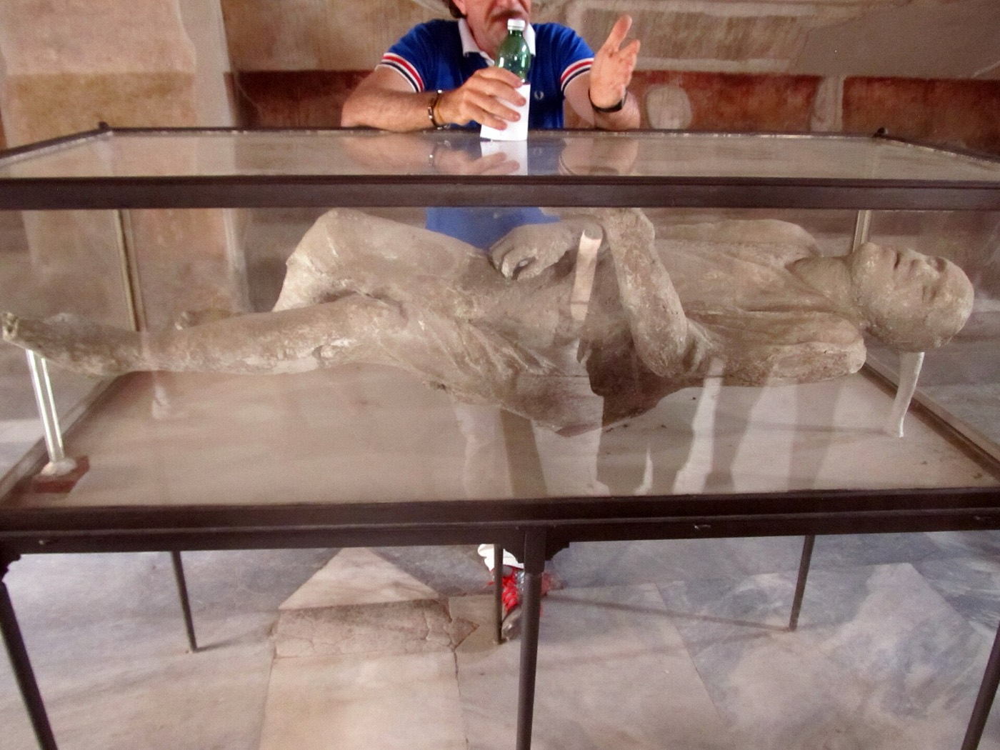
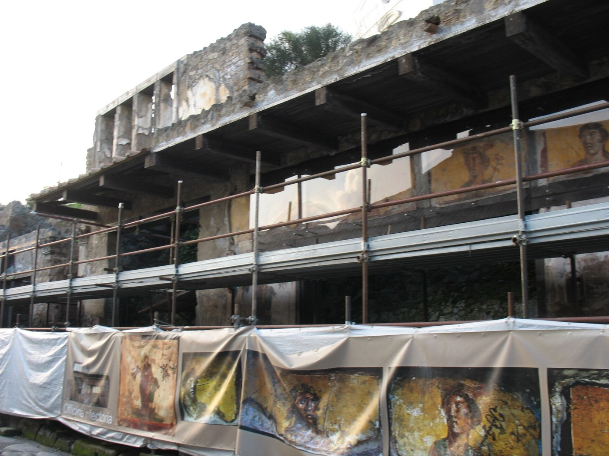
Deconstruct the question
Using Sources A and B and your own knowledge, assess the effectiveness of responses to the conservation and ethical problems at Pompeii and Herculaneum. 12 marks
| Verb | Assess at 12 marks — a sustained judgement, not a survey. “Effectiveness” requires you to state the criteria you are judging against. |
| Scope | Two problem clusters — physical conservation and ethics — and the responses to each. Tourism belongs in the answer because it both funds and damages the sites. |
| Marks → length | Thesis, four to six themed paragraphs, conclusion. Roughly 700 to 900 words under exam conditions. |
| What the marker wants | Named programmes with dates and figures; a judgement that distinguishes what worked from what remains fragile; explicit use of all sources; and a position in the conclusion. |
| How students lose marks | (1) Listing problems and then listing responses, with no evaluation joining them. (2) Blaming Italy, which the post-2012 record does not support. (3) Leaving ethics out because conservation is easier to write about. (4) Ending with “more needs to be done”, which is not a judgement. |
Before you write: the planning template for 10–15 marks
- Deconstruct — circle the verb, the topic words, the cities, and the source instruction.
- Thesis — one sentence taking a position, with a built-in “but”.
- Three to four body paragraphs by theme, never source by source — each pairing a provided source with your own named evidence, each containing one evaluative sentence.
- Weigh, do not list — say which evidence is strongest and what stays uncertain.
- Conclusion — return to the thesis in fresh words. No new evidence.
The modelled response
Reveal the model answer
Because excavation is itself an act of destruction, the central duty at the Vesuvian sites has shifted over the last quarter-century from discovery to custodianship. Judged against that duty, the responses since 2010 have been substantially effective in slowing physical decay and markedly effective in reforming how the dead are studied — but they remain donor-dependent, unevenly funded, and permanently exposed to the very tourism that pays for them.
The scale of the problem has to be established before any response can be judged. Excavation un-preserves: roughly two-thirds of Pompeii’s sixty-six hectares stand open to sun, rain, rising damp, root damage and pigeons, and the Maiuri-era repairs are now themselves a threat, as reinforced concrete and iron armatures rust and split the ancient fabric they were installed to hold. Modern history added to it — some 160 Allied bombs struck Pompeii in 1943, and the Irpinia earthquake of November 1980 toppled walls across both towns. Visitors add their own damage, from abraded paving to names scratched into frescoes such as those of the Fullery of Stephanus. The crisis point came on 6 November 2010, when the Schola Armaturarum collapsed after torrential rain, bringing a state of emergency, international headlines about “Italy’s shame” and close UNESCO scrutiny.
The Italian response was the Great Pompeii Project from 2012: roughly €105 million, of which about €78 million came from the European Union, directed by a special director-general, Massimo Osanna. It stabilised the dangerous boundary between excavated and unexcavated ground, rebuilt drainage, restored and reopened dozens of buildings including the House of the Vettii after a twenty-year restoration completed in 2023, and added CCTV, lighting and accessible routes; favourable UNESCO reports in 2015 and 2017 lifted the threat of inscription on the List of World Heritage in Danger. The second image in Source B shows the everyday reality of that work: scaffolding, steel props and sheeting holding up an upper storey on the Via dell’Abbondanza, with reproductions of the building’s own frescoes on the hoarding in front. Judged on outcomes the programme was effective. Judged on structure it remains fragile, because deadline-driven grant expenditure is not the same thing as the permanent maintenance budget the site actually requires.
Internationally, the Herculaneum Conservation Project has been the stronger model. Since 2001 the Packard Humanities Institute, funded by David W. Packard, has worked with the Italian authorities and the British School at Rome under Andrew Wallace-Hadrill to repair roofs, reactivate the ancient Cardo V sewer as a working drain, and — most importantly — fund a resident craft team carrying out continuous maintenance rather than episodic rescue. UNESCO has praised it as a model public-private partnership. Its weakness is the source of its strength: it depends on the continuity of a single donor, and Herculaneum’s four excavated hectares make success far easier to achieve than across Pompeii’s forty-four.
Ethically the shift has been sharper still, because custodianship has displaced spectacle as the governing principle. Guzzo’s moratorium of 1999 reserved the unexcavated third of Pompeii for better future methods, on the logic that a deposit can only be dug once. Source A frames the resulting dilemma precisely: Fowler urging renewed excavation at the Villa of the Papyri for the lost literature it may still hold, Wallace-Hadrill answering that exposure would endanger the villa and drain funds from the living site. What makes this more than a stalemate is that technology has partly dissolved it — from 2023 the Vesuvius Challenge’s machine-learning “virtual unwrapping” of scroll scans has recovered passages of Greek Epicurean philosophy from scrolls that were never physically opened.
The treatment of the dead shows the clearest improvement of all. Bourbon and Victorian custodians staged skeletons in tableaux for distinguished visitors and jumbled the bones into stores, destroying the very individual integrity that modern science now needs. The first image in Source B captures what has not changed and what has: the cast still lies in a glass case with visitors leaning over it, yet the science around it is now non-invasive. In the 2015 Pompeii Cast Project Estelle Lazer’s team used a portable X-ray unit and a CT scanner to image eighty-six casts without damaging them, recovering ages, injuries and surprisingly good teeth, while also revealing the metal rods, missing bones and heavy re-sculpting inside them. Since most casts contain real human bone, they are simultaneously human remains, archaeological evidence and museum spectacle, and the ICOM Code of Ethics classes such material as sensitive. Uniquely, the Vesuvian dead have no descendant community to advocate for them, so custodians must do it — a duty the ancient-DNA results of 2024 underlined when the famous “mother and child” cast proved to be an unrelated adult male.
Tourism remains the unresolved pressure, and it is genuinely double-edged. Around four million visitors in recent record years fund staff, maintenance and research in one of Italy’s poorer regions, and built the public constituency that made the Great Pompeii Project politically possible; the same visitors abrade pavements, raise humidity in frescoed rooms, and generate theft, with nearly 600 objects recorded stolen between 1975 and 2000. Management is now genuinely sophisticated: a cap of 20,000 visitors a day with personalised tickets from 2024, defined one-way routes, rotating closures so that houses can rest and be conserved, active dispersal to Herculaneum, Oplontis and Stabiae, and virtual tours that deliver access with no footfall at all.
The responses have therefore been effective where they were structural and continuous — the Herculaneum maintenance model, the 1999 moratorium, the turn to non-invasive imaging — and only partially effective where they were episodic and grant-funded. No solved state exists, because conservation here is a permanent balance between the access that pays for the sites and the exposure that consumes them. The honest verdict is that Pompeii and Herculaneum are now being managed well rather than saved.
Your turn — tourism
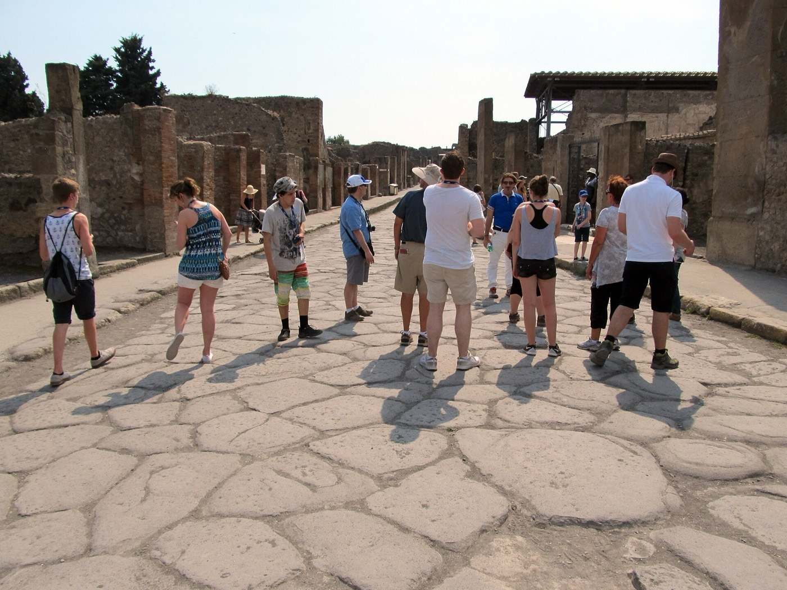
Using the source above and your own knowledge, evaluate the value and impact of tourism at Pompeii and Herculaneum. 12 marks
- Have I stated my criteria? “Evaluate” means judging against something — revenue, preservation, education, local livelihoods.
- Does my thesis hold both halves at once: tourism as lifeblood and as slow poison?
- Have I quantified where I can — visitor numbers, roughly 500,000 a year at Herculaneum, the 20,000-a-day cap from 2024, some 600 objects stolen 1975–2000?
- Have I named specific solutions rather than gesturing at management: timed and capped ticketing, one-way routes, rotating closures, dispersal to Oplontis and Stabiae, virtual tours?
- Have I acknowledged what the caps cost — pressure shifted to peak bookings and onto other sites?
- Does my conclusion commit to a position rather than sitting on the fence?
Directive verbs — what each one is actually asking
These are the NESA key words. The single fastest way to lose marks in Ancient History is to answer a verb you were not asked. Each entry below has the meaning and a one-line worked example from this topic.
A note on Stage 6 standard
Even where the verb is a low-order one such as outline or describe, Year 12 answers are expected to use precise terminology, named evidence and correct citation. Where the verb is assess, evaluate, analyse or to what extent, the marker is looking for contestability: what is debated, who debates it, and what remains uncertain. Saying honestly that the evidence cannot settle a question is a strength at this level, not a hedge.
Integrating source evidence into a paragraph
Most lost marks in this topic come from one habit: writing about the sources instead of arguing with them. The three pairs below are the same content written twice.
Weak
Source B is a photograph of a bakery in Pompeii. It shows some mills and an oven. This tells us that the Romans made bread. There were many bakeries in Pompeii.
Four sentences, no claim, no argument. It identifies and describes the source, which the marker can already do, and the final sentence has no evidence attached.
Strong
Baking was a capitalised trade rather than a household task: the bakery of Popidius Priscus in Source B integrates lava-stone mills with a large wood-fired oven on one commercial site, and with more than thirty pistrina at Pompeii the industry clearly served a market, not a family.
One sentence. It opens with a claim, uses the source as proof of that claim, and adds own knowledge that supplies the scale the photograph cannot.
Weak
Pliny the Younger wrote two letters about the eruption. He said the cloud looked like an umbrella pine. However, Pliny is a biased source because he wrote it later, so it is not very reliable.
The evaluation is generic and slightly wrong. “Biased” is doing no work, “not very reliable” is unsupported, and in fact volcanology has confirmed Pliny’s physical details — the real limitations lie elsewhere.
Strong
Pliny’s umbrella-pine simile is precise enough that volcanologists still call this eruption type Plinian; his limitations are therefore not accuracy but distance and purpose — he watched from thirty kilometres away, wrote some twenty-five years later to memorialise his uncle, and never names either city.
Concedes the source’s strength before naming its actual weaknesses, and each weakness is specific and evidenced. This is what evaluation looks like at Stage 6.
Weak
Women in Pompeii had no rights. They could not vote. Eumachia was a priestess who built a big building, which shows some women were important.
The first and third sentences contradict each other and the contradiction is never addressed. “Important” and “big” are not analytical words.
Strong
Legal exclusion and public prominence coexisted: Eumachia held no office and could not vote, yet as sacerdos publica she funded the largest building on the forum’s east side and the fullers honoured her with a statue inside it — female authority ran through property and priesthood rather than through the cursus honorum.
Names the tension, resolves it with a distinction, and supports both halves with specific evidence. The last clause is the analytical payoff.
The pattern underneath all three
Claim → source as proof → own knowledge for scale or context → one limitation or debate. That four-part unit is the mark-scoring shape of this topic. If a sentence does none of those four jobs, cut it and use the time on Section IV.
Common mistakes, and the fix
| The mistake | The fix |
|---|---|
| “Pliny the Younger watched Pompeii being destroyed.” | He watched from Misenum, about thirty kilometres away, and never names Pompeii or Herculaneum. Write that he described the eruption, not the cities’ destruction. |
| Treating 24 August AD 79 as certain fact. | Present it as the traditional date from medieval manuscripts of Pliny and from Cassius Dio, then give the autumn evidence — the charcoal graffito of 17 October found in Region V in 2018, autumn produce among the carbonised food, sealed wine dolia — and note that most scholars now favour late October while certainty is impossible. |
| Answering a 4-mark question at 12-mark length. | Convert marks into sentences before you write. Time lost in Section I cannot be recovered in Section IV. |
| Structuring an extended response source by source. | Structure by theme. Each themed paragraph should pair a provided source with your own named evidence. |
| “Source A is a written source which tells us…” | Delete the sentence. Open with the claim and let the source prove it. |
| Asserting that Pompeii was a great industrial exporter. | Name the debate: Moeller argued for a substantial wool-export industry, Jongman for a consumer town living off its hinterland. Say that the commerce was diverse and energetic but its scale is contested. |
| Claiming the counter dolia in bars held hot stew. | The porous unglazed jars suited dry goods. “Fast-food bar” is fine; confident menus are not. |
| “Only the old, the weak, women and children died.” | Estelle Lazer’s Pompeian sample is a normal cross-section of ages and sexes. Survival was a matter of timing and luck, not fitness. |
| “Freedmen took over a city in decline.” | That is Maiuri’s dated crisis theory. Wallace-Hadrill showed grand and humble houses interleaved in the same insulae, with commerce and residence always mixed. Cite the counter-argument before you judge. |
| Claiming you can identify enslaved people’s skeletons. | Legal status leaves no skeletal signature. Argue from documents, architecture and objects instead — and say openly that the gap exists. |
| Treating Petronius’ Trimalchio as evidence for Pompeii. | It is Roman satire written for elite amusement. Usable as evidence of attitudes towards freedmen; not usable as documentation of Pompeian society. |
| Asserting that Christians lived at Pompeii. | The evidence — a lost charcoal graffito and the Herculaneum wall “cross” that may be a shelf bracket’s shadow — is weak and disputed. Say unproven. |
| “The eruption preserved the cities, so they are safe.” | Excavation un-preserves: everything exposed begins to decay. The modern battle is conservation, not discovery. |
| Writing that Italy neglects Pompeii. | Use the 2010 Schola Armaturarum collapse as the crisis and the Great Pompeii Project and Herculaneum Conservation Project as the partial turnaround. A balanced evaluation scores higher than blame. |
| Calling the Building of Eumachia “the fullers’ headquarters”. | Its function is genuinely debated — guild hall, cloth market or multi-purpose portico. Say so; it is a neat example of the limits of archaeological inference. |
| Ending an assess answer with a summary. | End with a judgement. Restate your thesis in fresh words and commit to a position. |
Practice question bank
Questions across the range of mark values in Section I. Work them with the four-move method: deconstruct the sources you choose, deconstruct the question, write, then mark yourself against the checklists in the sets above.
Short answer
- Outline TWO natural features of Campania and explain how each contributed to the prosperity of Pompeii or Herculaneum. 4
- Compare the effects of the eruption of AD 79 on Pompeii and Herculaneum. 4
- Describe TWO contributions of Giuseppe Fiorelli to the excavation of Pompeii. 4
- Identify ONE nineteenth-century and ONE twenty-first-century representation of Pompeii, and outline one difference in how they present the eruption. 4
- Outline the sequence of events in the eruption of AD 79 as reconstructed by Sigurdsson. 4
- Outline what the evidence reveals about occupations in Pompeii and/or Herculaneum. 4
Middle range
- How useful is graffiti for understanding the economy of Pompeii? 6
- What does the evidence reveal about the role of the forum in the economy of Pompeii? 6
- Using a source of your choice and your own knowledge, explain what funerary monuments reveal about freedmen. 6
- Explain what the evidence reveals about household religion in Pompeii and Herculaneum. 6
- What does the evidence reveal about the influence of Egyptian culture on Pompeii? 6
- Describe the influence of Greek culture on the art and architecture of Pompeii and Herculaneum. 6
- Using sources and your own knowledge, describe the everyday life of people in Pompeii and Herculaneum. 7
- How useful are funerary monuments for understanding the social position of freed slaves (liberti)? 5
- What does the evidence reveal about the status and roles of women in Pompeii and Herculaneum? 8
- Assess the usefulness and reliability of Pliny the Younger’s account for an historian studying the eruption of Vesuvius. 8
Extended response
- Assess the usefulness and reliability of Pliny the Younger’s letters for an historian studying the eruption of AD 79. 10
- Explain how new research and technologies have changed interpretations of human remains at Pompeii and Herculaneum. 10
- Explain what the evidence reveals about the health of the people of Pompeii and Herculaneum. 10
- “Egyptian influence in Pompeii was a matter of fashion, not faith.” To what extent does the evidence support this view? 10
- Discuss the ethical issues raised by the study and display of human remains from Pompeii and Herculaneum. 10
- Assess the value and limitations of frescoes as evidence of everyday life in Pompeii and Herculaneum. 12
- Assess the value and limitations of the plaster casts for investigating how people lived and died at Pompeii. 12
- Discuss the problems of conservation at Pompeii and Herculaneum and evaluate the effectiveness of Italian and international responses. 12
- Evaluate the value and impact of tourism at Pompeii and Herculaneum. 12
- Assess the value and limitations of funerary monuments and inscriptions for understanding the social structure of Pompeii and/or Herculaneum. 15
- To what extent does the Forum of Pompeii provide a comprehensive view of economic activity in first-century AD Campania? 15
Three things to do in every answer
- Read the question twice and note which city or cities it names. Answer only those.
- Per paragraph: one named piece of evidence, what it reveals, one limitation. That triple is the mark-scoring unit of this topic.
- Flag debates honestly. The eruption date, the function of the Eumachia building, how competitive the elections were, whether Christians were present, the health effects of lead pipes. Showing where knowledge is uncertain is a top-band skill, not a weakness.
Know your researchers in pairs: Bisel (Herculaneum skeletons) and Lazer (Pompeii bones and casts); Maiuri (crisis theory) and Wallace-Hadrill (continuity); Moeller (producer city) and Jongman (consumer city); Fowler (dig the Villa) and Wallace-Hadrill (conserve it).
About the evidence, and what to check
How the sources here were handled
- Every source is real and cited. Ancient writers are cited by author, work and book or letter number; archaeological evidence by site, building and, where relevant, its CIL inscription number.
- No invented quotations. Where the precise wording of a translation could not be verified, the text is given as a labelled summary or a standard rendering, outside quotation marks. Short formulaic texts — the programma in set 5, the loaf stamp in set 3 — follow the renderings in your own study guide.
- Contested points are marked as contested, including the eruption date, the function of the Building of Eumachia, how competitive Pompeii’s elections really were, whether Christians were present, and the health effects of lead pipes.
- Figures that vary between studies — surge temperatures, visitor numbers, population estimates — are given as ranges or as approximations rather than as single precise values.
Worth checking against your own materials
- The exact wording of any source you intend to quote in an assessment task, especially Pliny’s umbrella-pine simile, the Julia Felix rental notice (CIL IV 1136) and the Popidius Celsinus dedication.
- The numerals on the Ad Cucumas sign in set 4. The sign advertises four grades of wine at four prices; the precise prices are best taken from your textbook.
- The current Section I structure and mark allocation. Section I is 25 marks with three or four parts, one worth 10 to 15 marks, but the split changes from year to year — check the most recent paper and marking guidelines.
- Population and casualty figures. Roughly 1,150 bodies recovered at Pompeii and about 300 skeletons in the Herculaneum boat chambers are reasonably firm; total death tolls and city populations are estimates.
- Two images are records rather than remains, and the captions say so: the electoral notices in set 5 are a nineteenth-century watercolour copy, and the Street of the Tombs in set 6 is an 1830 engraving. The Alexander Mosaic in set 7 is photographed as the modern copy laid in its original position; the original is in Naples.
Images: licences and credits
Every image on this site is freely licensed — public domain, CC0, or Creative Commons — and sourced from Wikimedia Commons, so this page can be shared publicly. Each caption credits its photographer and licence, and the table below gives the full list with links to the original files. Where a licence is CC BY-SA, that attribution must travel with the image if you reuse it elsewhere.
| File | Subject | Author | Licence | Source |
|---|---|---|---|---|
bacchus-vesuvius.jpg | Bacchus and Vesuvius lararium fresco, House of the Centenary, Pompeii | Chappsnet | CC BY-SA 4.0 | Commons |
boathouse-arches.jpg | The boat chambers on the ancient beachfront, Herculaneum | Lucamato | CC BY-SA 4.0 | Commons |
briullov.jpg | Karl Briullov, The Last Day of Pompeii (1827–1833) | Karl Bryullov | Public domain | Commons |
bakery-mills.jpg | Mills and oven in a Pompeian bakery | Isaac Harjo of Prowalk Tours | CC BY-SA 4.0 | Commons |
carbonised-loaf.jpg | Carbonised loaf of Roman bread | Tyler Bell | CC BY 2.0 | Commons |
thermopolium.jpg | Thermopolium of Lucius Vetutius Placidus, Pompeii | Jebulon | CC0 | Commons |
street-paving.jpg | Street with kerbs, cart ruts and stepping stones, Pompeii | Carole Raddato from FRANKFURT, Germany | CC BY-SA 2.0 | Commons |
caldarium.jpg | Caldarium of the Forum Baths, Pompeii | Isaac Harjo of ProWalk Tours; Screen capture and additional editing by Mary Harrsch | CC BY-SA 4.0 | Commons |
programmata.jpg | Watercolour record of painted notices, Via dell’Abbondanza | Unknown author | Public domain | Commons |
amphitheatre.jpg | Amphitheatre of Pompeii, exterior | Marco Ober | CC BY-SA 4.0 | Commons |
eumachia-statue.jpg | Statue of Eumachia in the Building of Eumachia, Pompeii | Isaac Harjo of ProWalk Tours; Screen capture and additional editing by Mary Harrsch | CC BY-SA 4.0 | Commons |
juliafelix-praedia.jpg | Portico and garden, Praedia of Julia Felix, Pompeii | Jamie Heath from United Kingdom | CC BY-SA 2.0 | Commons |
street-tombs.jpg | Luigi Rossini, Via dei Sepolcri in Pompei (1830) | Luigi Rossini | Public domain | Commons |
temple-isis.jpg | Temple of Isis, Pompeii | Mary Harrsch | CC BY-SA 4.0 | Commons |
anubis-priest.jpg | Fresco of a priest masked as Anubis, Temple of Isis, Pompeii | Gary Todd from Xinzheng, China | Public domain | Commons |
neptune-mosaic.jpg | Neptune and Amphitrite wall mosaic, Herculaneum | Jebulon | CC0 | Commons |
alexander-mosaic.jpg | Exedra of the Alexander Mosaic, House of the Faun, Pompeii | Maarten Heerlien from Voorschoten, The Netherlands | CC BY 2.0 | Commons |
victim-cast.jpg | Plaster cast of an eruption victim on display, Pompeii | daryl_mitchell from Saskatoon, Saskatchewan, Canada | CC BY-SA 2.0 | Commons |
conservation-work.jpg | Conservation scaffolding, Via dell’Abbondanza, Pompeii | Lord Pheasant at English Wikipedia | Public domain | Commons |
tourist-crowds.jpg | Visitors on a street at Pompeii | daryl_mitchell from Saskatoon, Saskatchewan, Canada | CC BY-SA 2.0 | Commons |
{kind=link}
{kind=link}
{kind=link}
{kind=link}
.jpg){kind=link}
{kind=link}
.jpg){kind=link}
{kind=link}
.jpg){kind=link}
{kind=link}
{kind=link}
.jpg){kind=link}
.jpg){kind=link}
{kind=link}
.jpg){kind=link}
{kind=link}
_-_Exedra_of_the_Alexander_mosaic_2015_071_(21192658765).jpg){kind=link}
.jpg){kind=link}
{kind=link}
.jpg){kind=link}
The text, modelled answers and annotations on this site are the work of the teacher who built it, for classroom use.
Where a free image could not be found
Three things this resource would ideally show have no freely-licensed equivalent, so they are described in words instead of pictured. Say so to students rather than letting the gap pass unnoticed — it is a small lesson in how availability shapes what gets taught.
- A cast inside a CT scanner (the 2015 Pompeii Cast Project). Described in question set 8.
- Mineralised food remains from the Cardo V sewer — the pips, fish bones and sea-urchin shell. Described in question set 4; the carbonised loaf in set 3 stands in as physical food evidence.
- A household lararium fresco showing the Lares, genius and serpent. The shop shrine in question set 4’s Source B shows the same iconography in a commercial setting.
Syllabus
Prepared for NSW Ancient History Stage 6 (Year 12), Core Study: Cities of Vesuvius — Pompeii and Herculaneum. Syllabus wording © NSW Education Standards Authority (NESA). The assessment outcomes most relevant to this site are AH12-6 (analyses and interprets different types of sources for evidence), AH12-7 (discusses and evaluates differing interpretations and representations of the past), AH12-9 (communicates historical understanding) and AH12-10 (ownership, custodianship and conservation). Check the current syllabus, past HSC papers and Notes from the Marking Centre at educationstandards.nsw.edu.au.